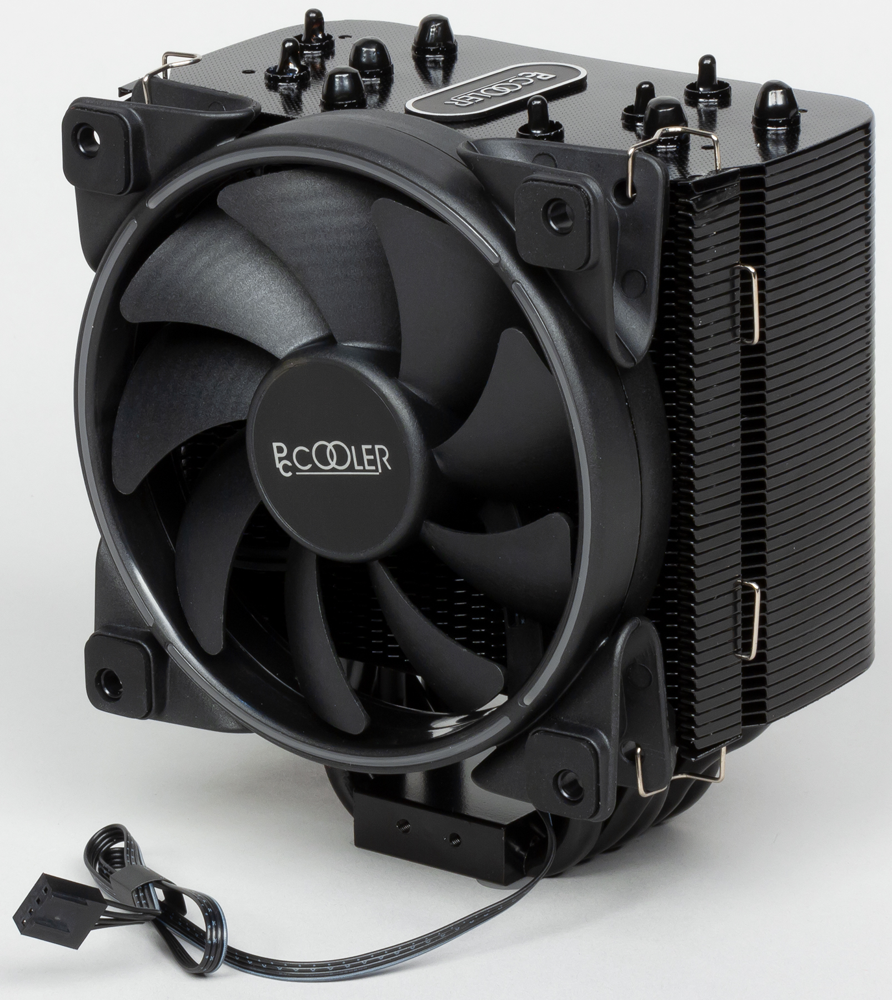

Кулер — в компьютерах, это устройство, состоящее из вентилятора и радиатора. Нужен для охлаждения процессора, блока питания и видеокарты, а также вывода горячего воздуха из корпуса настольного компьютера, сервера или ноутбука.
RPM - число оборотов в минуту. Чем оно больше, тем выше производительность вентилятора (см. ниже), и тем сильнее он сможет охладить радиатор. Но и тем шумнее он будет.
dB - уровень шума (децибел). Мощные кулеры с большими вентиляторами шумят сильнее. Приемлемым уровнем шума считается 25-30 dB, но 30 dB - уже довольно-таки сильный шум, и те, кто приобретает кулеры с таким уровнем шума, должны быть готовы потерпеть ради достижения своей цели.
Тип подшипника. В подавляющем большинстве случаев это либо подшипник качения (Ball Bearing), либо подшипник скольжения (Sleeve Bearing). Вентиляторы на подшипнике качения имеют целый ряд преимуществ - меньшие потери на трение, большая долговечность, большая развиваемая скорость вращения. Но у его оппонента есть преимущества - дешевизна, простота изготовления, малая восприимчивость к механическим воздействиям и меньший уровень шума. Стандартом сейчас становятся вентиляторы на подшипнике качения из-за лучших эксплуатационных качеств.
Разъем подключения. Сейчас используются 3 типа разъёмов для подключения кулеров - расположенные на материнских платах 4-pin c PWM-регулировкой скорости вращения и 3-pin c регулировкой путём изменения напряжения, а также для этого может использоваться стандартный 4-pin разъём блока питания.